Darjeeling
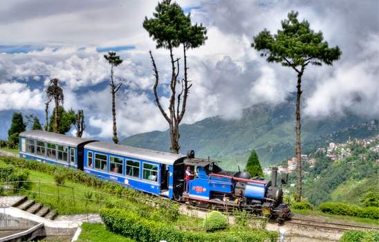
In the summer of 2016 we made a trip to Darjeeling, one of the most famous hill stations in the eastern India.
It was not decided before hand. In fact, we were not ever sure of where we should go. After much
speculation boredom of daily life and obviously the humidity of July decided it. Yes, we were going to Darjeeling at last.
We packed our bags and said farewell to our very own Baruipara station on 30th June, 2016 at around noon. It did not seem to
be a very peaceful journey at the beginning as Bhaskar da(elder brother of Sushovan) had a little accident
had a little accident while he was coming to see us off at the Sealdah station. However, ignoring all the mischiefs we made
our way to Sealdah station. We were finally in Tista-Torsha express. Train started at 1.40PM from the station. We were
exhausted by the scorching temperature outside. The train caught speed and soon we were out of the urban periphery. The train
stopped at Naihati station for a while and then entered Nadia district. We finished our meal with Parathas
(a kind of Indian bread) and delicious 'Alur dom'(potato curry), made by my mom. The landscape changed.
I wanted to enjoy every bit of the journey. I was standing at the gate and watching the vast green fields of Jute.
Meanwhile the sun changed it color into bright orange and was descending in the West. Oh! I forgot to mention another
mischief in the train. A stupid GRP constable passed some humiliating comments on us and Sushovan lost his head and embarked
in an argument with that silly creature. A constable is supposed to protect us, instead he was acting inappropriately. We even
called 482(railway helpline number) but in vain. The poor security system on India! Anyway, Bapi(my father-in-law) went to sleep
in his berth and we, the love birds, started chattering. We went to sleep at around 11.35PM. It was raining profusely when we
reached New Jalpaiguri the next day at 3.30 in the morning. It was really depressing. The rain did not have
any intention to stop. We had tea at the tea statll. "The rain is going to screw up everything"-- I thought.
Sushovan went to arrange something and Bapi and I took rest in the railway waiting room. There were plenty of Jeeps and cars
waiting outside the station to grab the tourists as it is the only means of earning bread for them. One can clearly hear their
trade cry "Nepal, Darjeeling, Gangtok". We, along with some other passangers, booked a Jeep to Darjeeling. Our journedy started
again at around 5AM. The landscape changed after 15 minutes. We had left the crowded city behind and made our way to Darjeeling.
The nature was so green and fresh. All m negative thoughts turned into thrill and jubilance. After half an hour we halted in
a tea shop to have another round of tea as it would take nearly 3 hours to reach our destination. We commenced. Meanwhile the
rain turned into drizzle. Green, yes that it the only color I could see. We saw some military camps. I even noticed some
hilly brooks gliding at their their own sweet will. But I was waiting with eager eyes to see the hills. Finally, it appeared,
the hills of Darjeeling. The vast hills, reaching up to embrace the sky, mesmeized us. Our Jeep was running through the winding
road. There were little hamlets and the houses looked like match boxes. The winding roads and sharp turns were really making
me nervous. But, the drivers are really skilled and focused. Their driving skill is unmatched I suppose. We left behind Kurseong,
a little town among the hills. The hills were completely covered with dense forests. One could see littl water falls emerging from
the heart of the rocks. Some kind of wonderful wild flowers in blue, white, peach, red and yellow were enhancing the beauty of
nature. In the meantime we reached Darjeeling at around 10.30AM. We booked two rooms at Hotel Nirvana and yes there was another
mischeif. When we unpacked the bags, to our utter dis? all our belongings got wet. Anyway we took our bath and took rest for
a while. It was lunch time. We were so hungry as if we had not eaten for a decades. We want to 'The Jains', a pure vegeterian
restaurant. We ordered plain rice, jeera rice, mixed vegetable curry, tawa roti and dal fry. The food was delicious. We
enjoyed our lunch whole heartedly. In the afternoon we got ready to take around of the city. First, we went to a local dhaba.
We enjoyed hot tea and steaming momo. You have to taste momos when you are in Darjeeling. Then we visited the Mall road.
There was an open theatre and a statue of the eminent poet Bhanu Bhakt and of course the foggy atmosphere. The local market
near Mall road contains everything one needs. There were grocery shops, travel agencies, meat shops, fruit and vegetable
vendors, cloth store, antique goods and tea shops. I bought a sweater cum kurti frm there. The things over there were too expensive!
Anyway, we returned to the hotel at around 7PM. Bapi wanted to take rest but Sushovan and I decided to walk around the little town
. So we got out. It was pretty cold outside. We enjoyed some street foods, packed our dinner and went back to the hotel again.
The entire town became deserted at 10PM. There was hardly any human being in the streets of the city. The shops and houses were
shut down.
Next morning we planned to go to the Pashupati market, a small market at the border area of Nepal. After having breakfast at Jains
, we started our journey in a Maruti van. Again the same spiral roads, unending greenery, tea gardens and foggy atmosphere. The
din and bustle of Darjeeling ciy disappeared. It took 3 hours to reach Pashupati market. It was a small market. They had all sorts of
imported goods, electronics, shoes, watches, umbrellas, bags, clothes and the Chinese versin of many cosmetics. The products
were really cheap and the quality was also unquestionable. I bought lipsticks, eyeshadow palette, foundation and nailpolish. Bapi
bought unmbrellas. It was a steal. Anyway, we could not bue more products due to the custom check at the border. The shopkeepers
were so polite and covincing and it means you have to stick to what you need and don't go into a buying spree. Our next destination
wes Mirik lake. Again a long 3 hours journey. I must say the highland people have a good taste for music. The melodious Hindi
songs added a special charm to our delightful journey. When we reached Mirik, it was pouring heavily but the sky became clear in a moment
. The view of Mirik lake was breath taking. We wanted to spend more time there enjoying the views but time did not spare us. We had to leave
the place. We visited the famous Bokar monastery, the home of Buddhist Lamas. We had to return to the Jeep stand as we were supposed
to reach NJP by 8PM. We reached Siliguri at around 7.30PM. Again, we were in plains. Kanchankanya express was delayed by an hour.
We freshened up at the railway room. Our train left NJP at 9.30PM. Our short trip was over. We returned home the next morning with
a lot of memories. The trip will always be green in my memory.
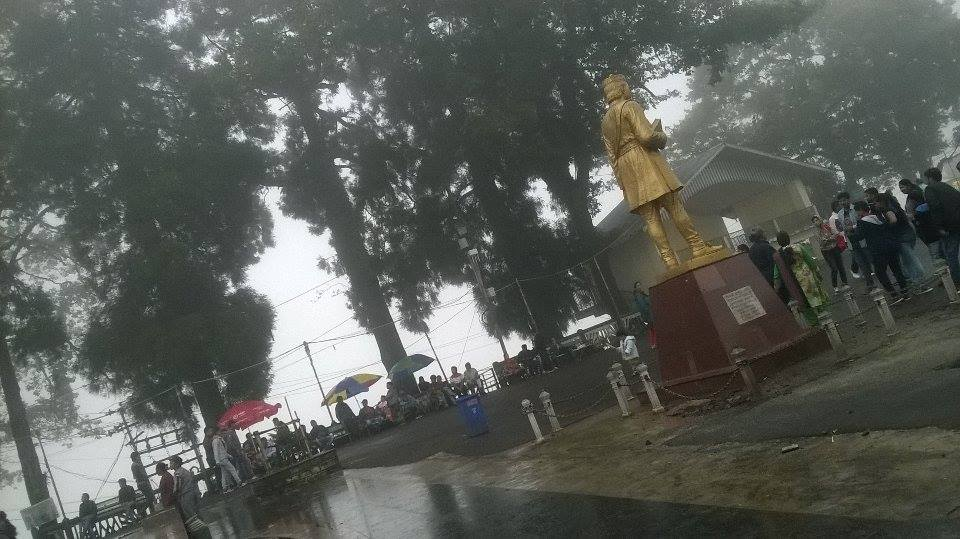
Statue of Bhanu Bhakt at Mall
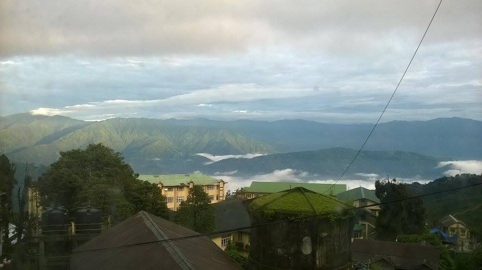
The green hills shine at our window in the morning
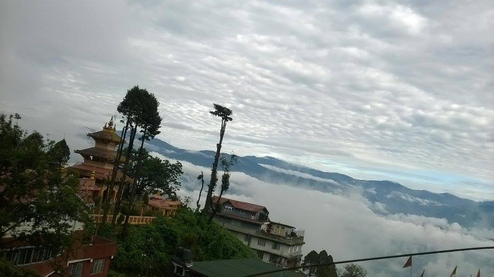
The clouds from the sky and the fogs from the land obscuring the view of hills
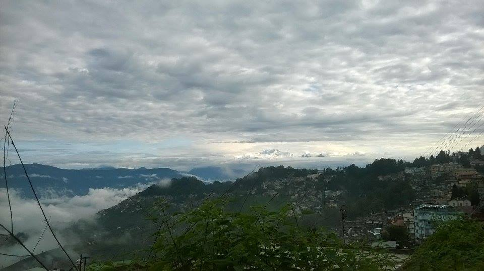
At last, Kanchenzangha rises and shines
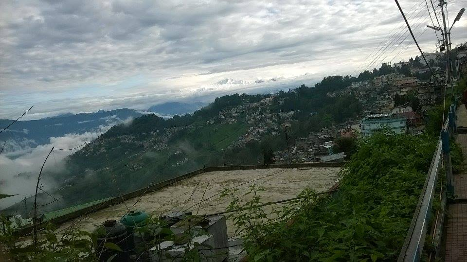
A series of mountain peaks including Kanchenzangha
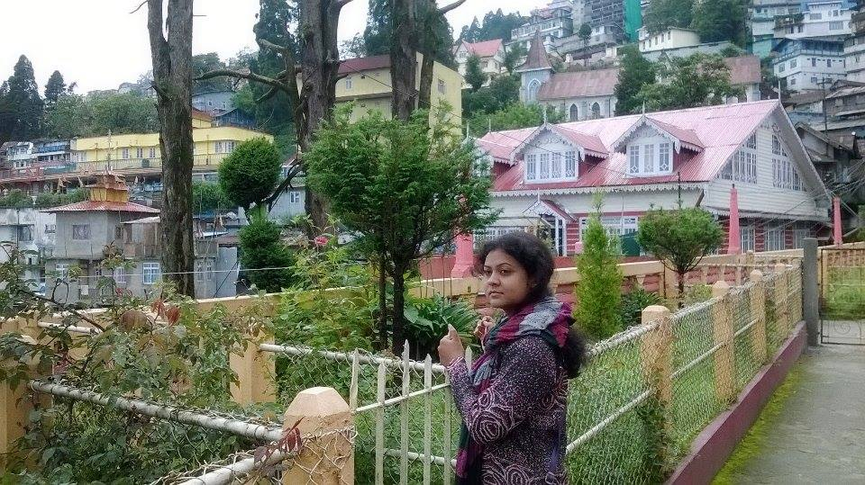
Sometimes the good pics are clicked when you don't pose
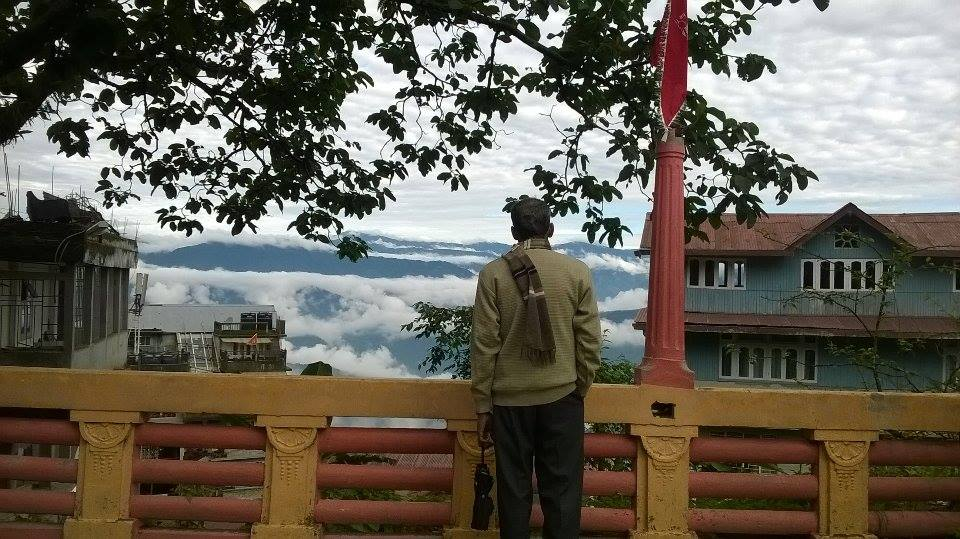
The asetic atmosphere at the temple abounds with the tranquil mountaints provoks introspection
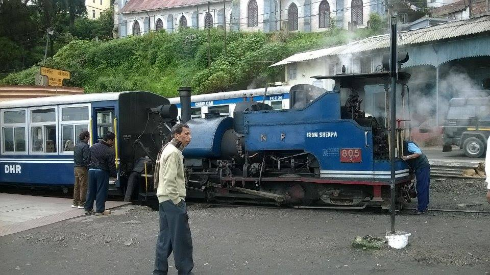
An old but well-maintained steam engine of the British era keeps dad increasingly courious
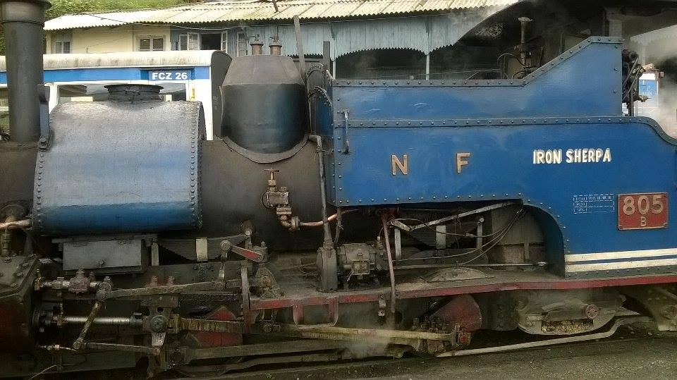
A king of Northern Frontier Railways
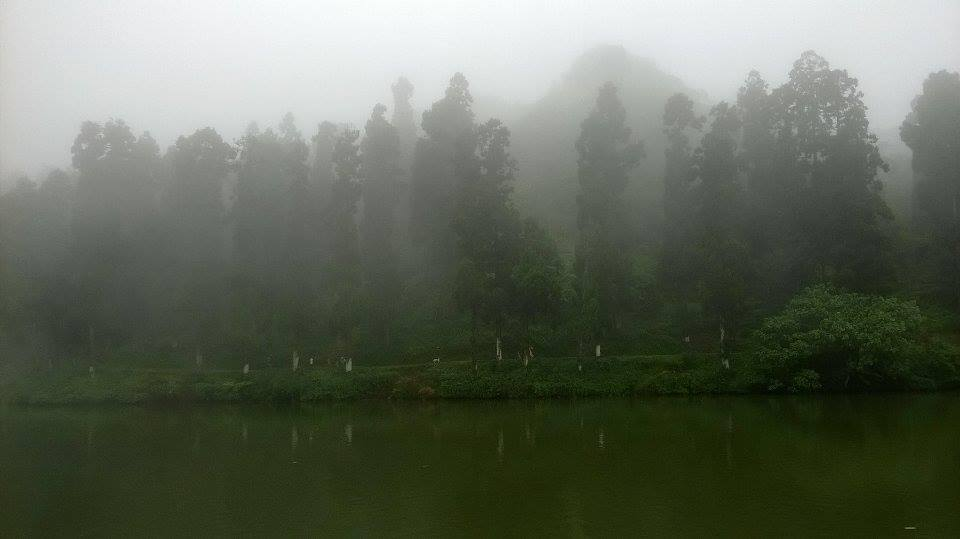
Eccentricity of nature at Mirik
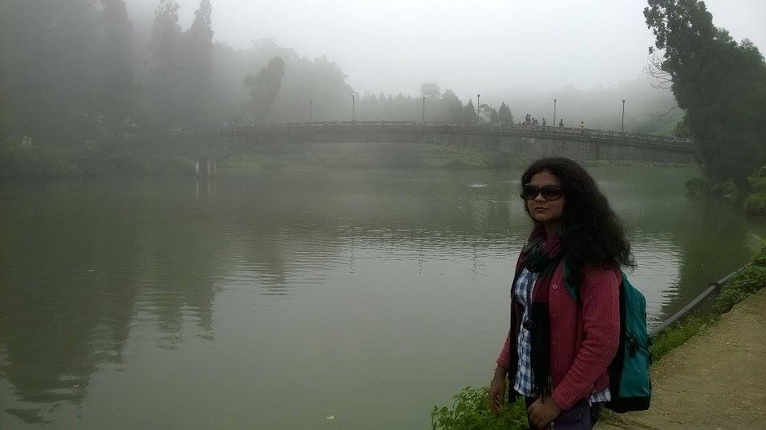
Nita quite enthusiastic to cross the lake at Mirik
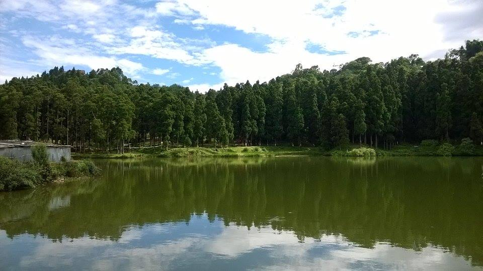
When the green touches the sky
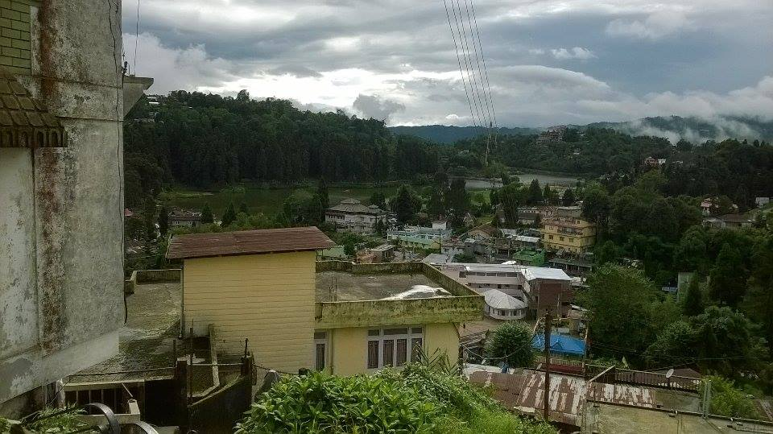
A quick glance of the small town of Mirik from a hilltop
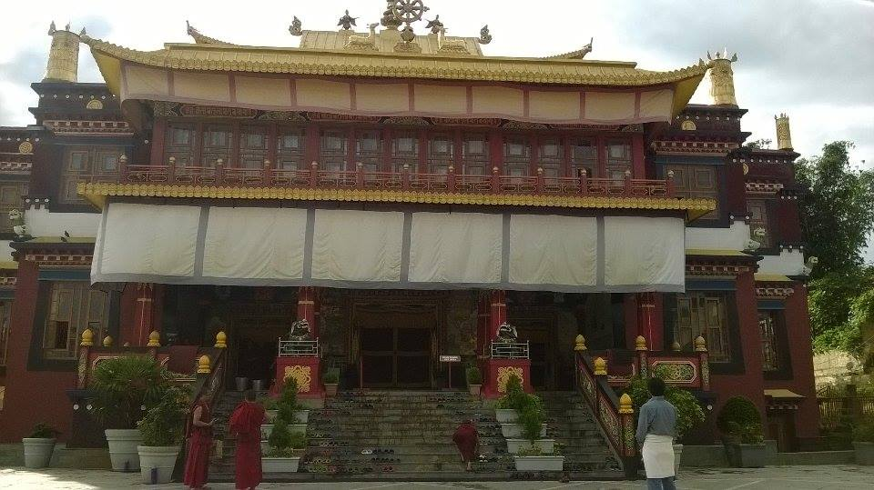
The famous Bokar Monastry
Previous
Next
BANKURA:
Nita and I had made this trip to Bankura, a disrict in the state of West Bengal in India, during my
visit to India in December, 2015. During this short motorbike trip we could not really take a lot of pictures. However, what
has been captured is this vivid description in Nita's journal. She wrote it in Bengali, my mothertounge.
From Nita's Journal:
বাঁকুড়া
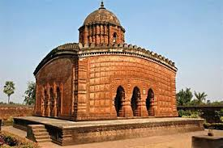
মানুষের মন ভারী অদ্ভূত। কিছুতেই কোনো এক স্থানে থাকতে পারে না। অজানা কিছুর তীব্র আকর্ষণে তাই চিরপরিচিত জগত টা ছেড়ে সে মাঝে মাঝেই বেরিয়ে পড়ে নতুন কিছুর টানে। ঠিক এই রকমই একটা কিছু হল আমার সাথে। চারিদিকে অশান্ত পরিবেশ, নোংরামি, অপবাদ যখন এগিয়ে আসছে আমাকে গ্রাস করার জন্য তখন মনে হলো কথাও একটা চলে যাই। এই সব জঞ্জালের থেকে অনেক দুরে। পরিচিতদের ছাড়িয়ে অপরিচিতদের মধ্যে মিশে যাওয়া। নিজেকে নতুন ভাবে খুঁজে পাওয়া। তারিখ টা ছিল ২৩.১২.২০১৫। ডিসেম্বরের কনকনে ঠান্ডা রাত। হঠাত রাত ১০ টা নাগাদ ওর ফোন মামারবাড়ি থেকে। "বলছি, কাল আমরা বাঁকুড়া যাচ্ছি, সেই মত মানসিক প্রস্তুতি নাও, বাড়িতে বল আর ব্যাগ পত্র গুছিয়ে নাও, ভরে বেরোতে হবে। " ওই ফোন তা ছিল গ্রীষ্মের তপ্ত দুপুরে এক পশলা বৃষ্টির মত। খুব খুশি হলাম। মা, দাদা কে বললাম। বলে ব্যাগ গুছিয়ে নিলাম। সারারাত বারে বারে ঘুম ভাঙ্গছিল আর ঘড়ি দেখছিলাম। ভোর হলো। প্রস্তুত হয়ে সকাল ৬.৩০ নাগাদ বাড়ি থেকে বেরোলাম। বাস ধরে নামলাম তেলিয়ার মোড়। সেখান থেকেই দুর্গাপুর হাইওয়ে ধরব আমরা। প্রায় ৮ টা নাগাদ ও এলো মামাবাড়ি থেকে। বাইকে ট্যাঙ্ক ভর্তি করে ২৪ তারিখ কনকনে শীতের সকালে বেরিয়ে পড়লাম অজানা এক সফরে সাথে অল্প কিছু জামাকাপড় আর অতি প্রয়োজনীয় কিছু জিনিস শুধু। গড়ে ৮০-৯০ কিমি/ঘন্টা বেগে গাড়ি ছুটতে লাগলো। কোনো হাইওয়েতে মোটামুটি এই ট্রাফিকের মধ্যে দিয়ে এই গতিতে বাইক চড়ার অভিজ্ঞতা এই প্রথম। মাঝে মাঝে ও আমাকে জিগ্যেস করছিল আমার ভয় পাচ্ছে কিনা। সত্যি কথা বলতে কি ভয় আমার এক মুহুর্তের জন্যও লাগেনি। কারণটা সম্ভবত ওর প্রতি বিশ্বাস। আমি জানতাম ও আমাকে ঠিক নিয়ে যাবে ভীড় কাটিয়ে। বিন্দুমাত্র আঁচড়ও লাগবেনা আমার গায়ে।
এক ঘন্টা পর পৌছলাম বর্ধমান। সেখানের একটি ছোট্ট চা এর দোকানে একটু হাত মুখ ধুয়ে চা বিস্কুট আর দোকানের প্রথম ভাজা গরম গরম আলুর চপ। অসাধারণ এক অভিজ্ঞতা। তারপর আবার ছুটে চলল আমাদের বাইক।
বর্ধমান শহরের গন্ডি পেরিয়ে দুর্গাপুর হাইওয়ের উপর দিয়ে চলা শুরু। ট্রাফিক অনেকটা হালকা হতে শুরু করেছে। প্রায় ৪৮কিমি চলার পর পানাগড় এসে রাস্তার বাম সাইড এ পড়ল 'গ্রাম-বাংলা' রেস্তোরা।
ভারী মিষ্টি নাম। আবার নামলাম কিছুটা বিশ্রাম ও প্রাতঃরাশ সারার উদ্দ্যেশ্যে সেখানে জিভে জল আনা ছোলাপুরি দিয়ে সারলাম ব্রেকফাস্ট। তারপর আবার যাত্রা শুরু। নিজেকে হঠাত করে যেন যাযাবর মনে হচ্ছিল।
যেন কোনো এক অজানার ডাকে ছুটে চলেছি। জিটি রোডে প্রবেশ করলাম। ৩-৪ কিমি যাবার পরই পড়ল মুচিপাড়া মোড়। বাম দিকে ৯নং স্টেট হাইওয়ে ধরে এগিয়ে চললাম। ঠিক মনে নেই তবে ৩-৪কিমি পর পার
হলাম দুর্গাপুর স্টেশন। তারপরই এলো দামোদর নদী। কি অপরূপ তার শোভা। এক মুহুর্তের জন্য মনটা এখানেই দাঁড়িয়ে গেল যেন। কিন্তু আমাদের তো এগিয়ে চলতেই হবে। ঘড়ির কাঁটার সাথে ছুটে চলল আমাদের
বাইক, তারপর এলো বারজোড়া। রাস্তার দুদিকে ঘন গাছপালায় ঠাসা। সবুজের কোলে এসে পড়লাম। লক্ষ্য করলাম এবার চারপাশে গাছপালার সমারোহ যেন বেড়েই চলেছে। বাঁকুড়া, শুশুনিয়ার একটা পূর্বাভাস দিচ্ছে তারা।
ওই রাস্তায় হালকা মিটে রোদে গা ভিজিয়ে এগিয়ে চললাম। পথে পড়ল বেলিয়াতোড়ার জঙ্গল। দুদিকে জঙ্গল এক মুহুর্তের জন্য মনে হলো জীবনটা এখানেই থেমে যাক। যেন আদি মানব হয়ে এই সবুজের কোলে কাটাই কিছুটা সময়।
কিন্তু ঘড়ির কাঁটা বলছে চলে যেতে হবে। এগিয়ে চললাম বাঁকুড়া শহরের উদ্দেশ্যে। রাস্তা দুদিকে ভাগ হয়ে গেল। একটি যাচ্ছে বিষ্ণুপুর আর অপরটি বাঁকুড়া স্টেশন রোড। দুপুর তখন প্রায় ১টা। বাইপাসের
দিকে এগিয়ে চললাম থাকার কোনো আশ্রয় খোজার জন্য। ১.৩০ নাগাদ পৌছলাম হোটেল সপ্তর্ষি বা এ. কে. দত্ত হোটেলে। প্রাপ্ত বয়স্ক হওয়া সত্বেও আমাদের দুটো আলাদা ঘর নিতে হলো যেহেতু আমরা অববাহিত।
জানিনা এ কোন গণতান্ত্রিক সমাজে বাস করছি আমরা। যেখানে দুজন প্রাপ্তবয়স্ক ছেলে মেয়ের একসাথে ব্যক্তিগত কিছু মুহূর্ত কাটানোর জন্য বিবাহিত হওয়া বাঞ্ছনীয়।চন যাই হোক যে যার ঘরে গিয়ে স্নান করে ফ্রেশ
হয়ে নিলাম। রুম নং ১০৬এ আমি আর ১০৯এ ও। ২টো নাগাদ লাঞ্চ এলো আমার ঘরে। ভাত, সবজি, ডাল আর মাছ। এই প্রথম অর সাথে এক সাথে বসে এ ভাবে খাওয়া দাওয়া করা। ও যখন আমার সামনে বসে তৃপ্তি
করে খায় সেটা আমার দেখতে খুব ভালো লাগে। খেতে খেতে বিভিন্ন বিষয় নিয়ে কথা হতে লাগলো। একদিনে ঘটে চলা বিভিন্ন অপ্রীতিকর ঘটনা যেন দম বন্ধ করে দিচ্ছিল। মনে হলো অর সাথে সবকিছুর থেকে দুরে
এই নিবিড় সময় কাটানোটা খুব দরকার ছিল। সবার থেকে এবং সব কিছুর থেকে দুরে সরে এসে আমরা কি চাই, আমাদের ভালবাসা, আমদের স্বপ্ন গুলো, একে অপরের প্রতি শ্রদ্ধা সম্মান সব কিছু যেন আমাদের
কাছে এনে দিল। খাওয়া দাওয়া সেরে কিছু ক্ষণ বিশ্রাম নিলাম। হোটেলের ঘরগুলি ছিল চমত্কার। লাগোয়া বাথরুম, পরিষ্কার-পরিচ্ছন্ন, ড্রেসিং টেবিল, আলমারি এ যেন এক ছোট্ট জগৎ। বুকে মাথা রেখে যখন শুয়েছিলাম
মনে হলো আমার দুনিয়ার সবথেকে সুখী মানুষ। যাই হোক, আবার প্রস্তুত হয়ে বেরিয়ে পরলাম শুশুনিয়ার উদ্দেশ্যে। এক ভদ্রলোক কে জিগ্যেস করলাম। সত্যিই তিনি প্রকৃত অর্থে ভদ্রলোক। পথের দুধারে শুধুই অফুরন্ত
সবুজ বনানী। উঁচু নিচু জমি আর নিষ্পাপ কিছু মানুষের কৌতুহলে তাকিয়ে থাকা। সব মিলিয়ে স্বর্গীয় এক আনন্দ আর মনের মধ্যে শুশুনিয়া কে দেখার অদম্য এক ইচ্ছা। দুরের কোনো উঁচু টিলা দেখলেই মনে হচ্ছে
যেন ওই বুঝি শুশুনিয়া। প্রায় ১ ঘন্টা চলার অবশেষে দেখা মিলল সেই ধুম্রামান সুশুনিয়ার কত স্মৃতি, কত উত্থান পতন এর সাক্ষী হয়ে যুগের পর যুগ ধরে দাঁড়িয়ে আছে সে। দূর থেকে শুশুনিয়া কে খুব রহস্যময় লাগছিল।
সূর্য অস্ত গেছে সন্ধ্যা নামব নামব আর দুরে শুশুনিয়া। দুজনেই মন্ত্রমুগ্ধের মত তাকিয়ে রইলাম কিছুক্ষণ কিন্তু আমাদের ফিরতে তো হবেই। তাই হোটেলের উদ্দেশ্যে রওনা দিলাম। বলে এলাম "বিদায় শুশুনিয়া,
আবার এসব ফিরে"। ফেরার পথে একটি অসাধারণ জায়গা পড়ল গাছপালা আর মাঝখানে ছোট্ট একটা খাল। সেখানে না দাড়িয়ে পারলাম না। মিশে গেলাম সেই প্রকৃতির অপরূপ শোভায়। শোল ছেড়ে গান গাইলাম দুজনে।
তাড়িয়ে তাড়িয়ে উপভোগ করলাম প্রতিটা মুহূর্ত। তারপর আবার শুরু হলো হোটেল ফেরার পালা। পরদিনই দেহেতু খ্রীষ্টমাস তাই বাঁকুড়া শহর সেজে উঠেছিল অপরুপ রূপে। শহরে একটি চার্চ এ গেলাম। কিছুটা সময় চার্চ
এ কাটিয়ে সামনের একটি ফুচকার ষ্টলে ফুচকা আর তারপর হোটেল। ঠান্ডা বাড়তে লাগলো। রাত তখন ৮টা। আবার হেঁটে বেরিয়ে পড়লাম একটু আশপাশটা ঘুরে দেখার জন্য। স্থানীয় একটি দোকানে কফিতে চুমুক দিয়ে
অপরিচিতদের ভিড়ে ভবঘুরের মত ঘুরতে লাগলাম। কেউ আমাদের চেনেনা, গায়ে কাদা ছড়ার মত কেউ নেই, শুধু ভালবাসার মানুষটা আর আমি। মনে হচ্ছে দিনটা যেন শেষ না হয়। একটি মন্দিরে আরতি হচ্ছিল। কিছুক্ষণ
থামলাম সেখানে। জীবনে একসাথে এত বৈচিত্র্য আগে কখনো আসেনি। ৯টা নাগাদ ফিরলাম হোটেলে ক্লান্ত হয়ে শুয়ে পরলাম। ও টিভি চালিয়ে বসলো। আমি আর রাতে কিছু খেলাম না। শুধু একটা কোক। ও ডিনার
সারলো।
-Nita Das
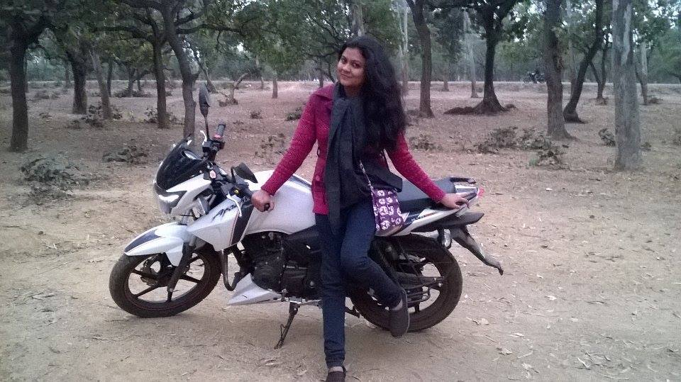
In a mood to ride the motorbike through the forest
Previous
Next